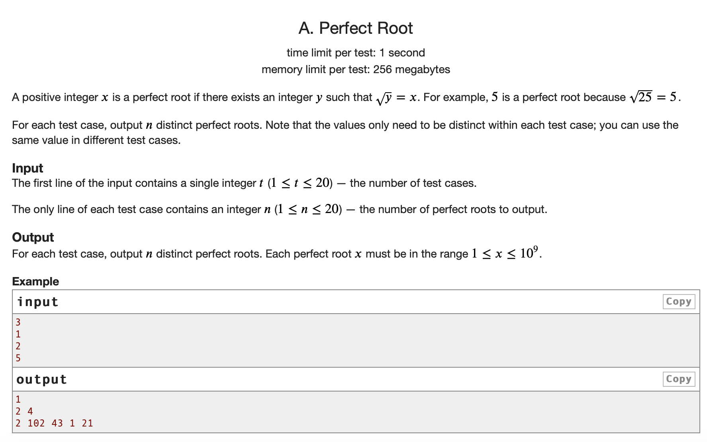
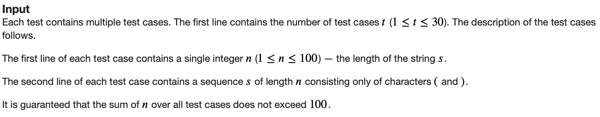

There is a reason why experienced competitive programmers can look at a problem and then within seconds, be able to determine a basic idea of the solution. All problems in competitive programming require an understanding of how fast an algorithm must be to solve it, and within each problem statement there is important snippets that can immediately help you perform a basic time complexity analysis.
A Quick Review of Big-O Notation
Time complexity is represented through Big-O Notation, which in mathematical terms, states that a function \(f(x)\) is equal to \(O(g(x))\) if and only if
\[ \exists M,x_0 \text{ s.t. } |f(x)| \leq Mg(x), \forall x \geq x_0 \]
To explain this more simply, an algorithm has a time complexity of \(O(f(n))\) if for some arbritary minimal input size, when increasing the input size by a factor of \(n\), the runtime of the algorithm increases by a factor of \(f(n)\). In the context of competitive programming, the runtime is usually approximated by the number of basic operations performed, which are general computer operations (adding, subtracting, conditionals) that have a near instant and constant \(O(1)\) amount time to complete. (Technically running time.sleep(100) in Python would be a \(O(1)\) operation since it will always pause the program for 100 seconds, but it can hardly be called instantaneous, so while it is a constant operation, it is not basic.) Basic operations can also include array index lookup, adding two numbers, modulo division, and assigning variables.
Dictionary additions and lookups can also be considered basic operations, but this assumes there are an insignifcant number of collisions in the hashing function. Especially within CodeForces there are scenarios where users can design test cases to intentionally cause many such collisions resulting in set/dict lookup to take \(O(n)\) time per operation. https://codeforces.com/blog/entry/62393 contains a very robust setup at the end to make a custom hash that is immune to such hacks, but from practice, even small adjustments to the basic hash function used are usually enough.
Now that this overview has been taken care of, the rule of 100 million can be summed up by the following subtitle:
Assume at most 100 Million Operations Per Second
- state rule 100 million -> 1 second
Formally, to estimate runtime, we can assume that a program can complete up to 100 million basic operations per second.
In practice, assuming a program will perform 100 million operations per second is fairly optimistic. Most problems are designed to allow quite a bit of leniency up to roughly a factor of 3, so assuming about 30 million operations per second for C++ is a safe estimate. As for Python, this number drops to around 10 million operations per second, but having done many contests using Python, the number of times this actually affected me where an algorithm in C++ passes but that same one in Python fails is maybe once.
Knowing this, let’s use a few example statements to estimate the maximum runtime complexity allowed:

Here we observe that the maximum value of \(n\) is 200000, and that we have 2 seconds in this problem. \(200000^2 = 4*10^{10} > 2*10^8\), so we can safely assume an \(O(n^2)\) algorithm is not going to work. On the other hand, \(200000 < 2*10^8\), so we can be very sure that an \(O(n)\) algorithm can work. The tightest possible bound here would be \(O(n \log^2 n)\); computationally this works out to about \(\log(200000)^2*200000 \approx\) 62 million operations, which is under the 100 million operation per second assumption, but using 30 million operations per second as a safe C++ or optimistic Python estimate makes this complexity iffy. In actual practice, \(O(n \log^2 n)\) complexities are quite rare and this problem would most likely be expecting a time complexity of \(O(n \log n)\) or better given these constraints.

In this case, the maximum value of \(n\) is 2000, and that we have 4 seconds in this problem. This time a \(O(n^2)\) algorithm will be possible because \(2000^2 = 4*10^{6} < 4*10^8\). It is also worth noting that usually Codeforces problems have 1 or 2 second time limits, in the rare cases where a problem has 4 seconds allotted to it, it usualy means higher time complexities can be possible; in this case, \(O(n^2 \log n)\) (roughly 44 million) and even \(O(n^{2.5})\) (roughly 180 million) are possible time complexities for this solution. Especially on harder problems like this one, these are cases where more complex runtime algorithms can be possible, as the intended solution does have a \(O(n^2 \log n)\) solution.
Below is a table of many of the more common runtime possibilities, and a rough estimate for the maximum input size \(n\) for which an algorithm should reasonably be able to pass in 1 second:
| Time Complexity | Maximum n per second | Examples |
|---|---|---|
| O(1), O(log n) | \(n \\leq 10^{18}\) | Basic operations, binary search |
| O(sqrt n) | \(n \\leq 10^{14}\) | Trial division primality test |
| O(n) | \(n \\leq 10^7\) | Maximum of an array |
| O(n log n) | \(n \\leq 10^6\) | Sorting algorithms |
| O(n log^2 n) | \(n \\leq 200000\) | Query type problems on segment tree |
| O(n sqrt n) | \(n \\leq 50000\) | Sqrt decomposition, Mo’s algorithm |
| O(n^2) | \(n \\leq 3000\) | Brute force subarray sums |
| O(n^2 log n) | \(n \\leq 1000\) | Niche dp cases, very rare |
| O(n^3) | \(n \\leq 300\) | Floyd-Warshall |
| O(n^4) | \(n \\leq 60\) | 4D DP |
| O(2^n) | \(n \\leq 25\) | Brute force on all subsets |
| O(n!) | \(n \\leq 11\) | Brute force on all permutations |
This table is not comprehensive, but covers just about every time complexity I have observed. In actuality, the bolded ones are the most common time complexities used in problems and are thus the most important to remember.
Exceptions Where Slowest Allowed != Fastest Possible
The above table can be used accurately for the slowest possible algorithms a problem will accept. For the most part, this table also provides a decent estimation of what the time complexity actually is, but there are cases where a significantly faster solution is possible than what the input size implies.
Codeforce Div 2/3/4 Problem A
The point of a problem A on a Codeforces contest is so that everyone (or least almost everyone) is able to solve at least one problem on a Codeforces contest. In divison 1 contests, Problem A can be fairly challenging and thus have a reasonable time complexity estimation by it’s maximum allowable algorithm, but otherwise, many of these problems are created without consideration of optimizing the time complexity of the solution.

In this case, we notice that the maximum \(n\) value in a testcase is 20. Does that mean that the solution to this introductory problem has a \(O(2^n)\) time complexity? Well you could make a solution that does, but obviously there’s faster! If we read the question carefully, we can conclude that every positive integer is a perfect root because \(\sqrt{x^2} = x\) and \(x^2\) uniquely exists for every positive integer. So all we’d have to do is output \(n\) unique numbers for each testcase, which is an \(O(n)\) algorithm.
\(O(n^3)\) Estimates and Longer
Cases where the estimated runtime can be at least \(O(n^3)\) usualy mean the runtime is this long, especially on harder problems. But there are cases where the solution can be surprisingly faster, as one of these cases occurred to me recently to inspire the creation of this post.

With this case, a time complexity as high as even \(O(n^4)\) is possible because with a maximum \(n\) value of 100, \(100^4 = 10^8 < 2 * 10^8\) for a 2 second problem. Furthermore, from my initial attempts on this problem using a dynamic programming approach, I roughly computed that there was closer to around 12.5 million basic operations needed when \(n = 100\), so even if I was using Python, a \(O(n^4)\) idea was possible, and I assumed that the solution for this problem really was no faster than \(O(n^4)\).
What then proceeded to follow was 14 Time Limit Exceeded verdicts of complete and total agony as this contest dropped me out of the Candidate Master ranking on Codeforces. Here is a link to my last solution with a O(n^4) attempt where you can try and understand what exactly I was thinking..
From the editorial, there is a \(O(n^3)\) approach to this that can be optimized further to the \(O(n^2)\) algorithm I eventually submitted for upsolving, showing that the input limits are only absolute in determining the slowest possible solution, and not the actual fastest possible solution. I won’t explain the reasoning too extensively as I don’t want to provide spoilers for the problem and the editorial is effective for explaning the solution, but as for an exercise for the reader, try to understand how the observations made in my slow \(O(n^4)\) solution can be simplified greatly to create an \(O(n^3)\) or better algorithm.
The main slowdown is the dp setup used, where I am tracking the last and second last occurances of (, the first occurance of ), the count of ( - count of ), and the length of the bracket subsequence being considered. Furthermore, I observe that the bracket sequence is valid (ie. the score is not 0) only if the count of ( - count of ) is 0 AND the second last occurrance of ( is after the first occurance of ). This means this complex occurance tracking nonsense can be simplified to checking if the subsequence )(( exists the created subsequence or not.
To tell if )(( exists, all that needs to be done is to create a counter x which starts at 0. If a ) is added to the subsequence and x is 0, then x is increased to 1. If ( is added to the subsequence and x is 1 or 2, x is increased by 1. Otherwise, x remains as is. Then if this counter x ends up at 3, then the subsequence )(( exists. This means the only things needed to track in the dp are this counter, the count of ( - count of ), and the length of the bracket subsequence. This then makes a \(O(n^3)\) solution possible.
For the \(O(n^2)\) solution, another observation (which I somehow did end up making even in the \(O(n^4)\) attempts) is that the score of any bracket sequence will always be either 0 or \(n-2\), where \(n\) is the length of the sequence. This then means that only information needed to be tracked for computing the answer are the number of bracket sequences with the specific counter value and count of ( - count of ) and their combined lengths, which is possibe in \(O(n^2)\). My upsolved solution is an example of this. (https://codeforces.com/contest/2190/submission/358384748)